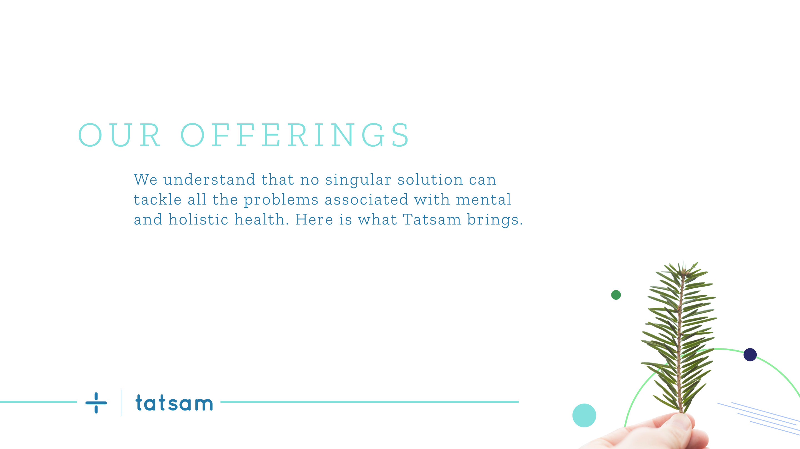

A reflected "+" — the same mark, made gentler.
The guide covers presence, communication and philosophy, for internal and external audiences — and none of it was decreed from a studio. It came out of multiple deep brainstorming sessions and generative workshops with the founders and team. The logo carries the whole argument in one gesture. The brand book, verbatim:
"+ is a sign associated with trusted healthcare. But this goes beyond that, there is a reflection. The idea of going from one side to the other. And a softer more gentler way of showing care."


Two offerings carry the belief to users — because, in the book's words, "no singular solution can tackle all the problems associated with mental and holistic health." Their definitions, verbatim:
Self care
"We give recommendations that help on the path to self growth. A self paced path that goes beyond changing habits and focuses on changing mindset."
Coaching
"Our curated selection of coaches in every domain from mental counselling to career, physical health and nutrition are there to give the needed guidance."

